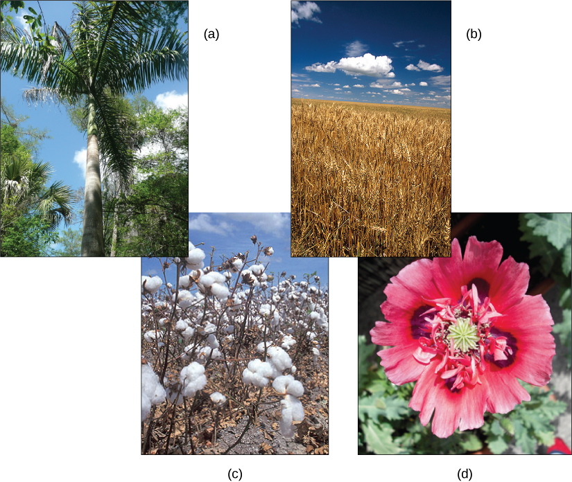
Plants play an integral role in all aspects of life on the planet, shaping the physical terrain, influencing the climate, and maintaining life as we know it. For millennia, human societies have depended on plants for nutrition and medicinal compounds, and for many industrial by-products, such as timber, paper, dyes, and textiles. Palms provide materials including rattans, oils, and dates. Wheat is grown to feed both human and animal populations. The cotton boll flower is harvested and its fibers transformed into clothing or pulp for paper. The showy opium poppy is valued both as an ornamental flower and as a source of potent opiate compounds.
Current evolutionary thought holds that all plants are monophyletic: that is, descendants of a single common ancestor. The evolutionary transition from water to land imposed severe constraints on the ancestors of contemporary plants. Plants had to evolve strategies to avoid drying out, to disperse reproductive cells in air, for structural support, and to filter sunlight. While seed plants developed adaptations that allowed them to populate even the most arid habitats on Earth, full independence from water did not happen in all plants, and most seedless plants still require a moist environment.
- 14.1 The Plant Kingdom
- Describe the major characteristics of the plant kingdom
- Discuss the challenges to plant life on land
- Describe the adaptations that allowed plants to colonize land
- 14.2 Seedless Plants
- Describe the distinguishing traits of the three types of bryophytes
- Identify the new traits that first appear in seedless vascular plants
- Describe the major classes of seedless vascular plants
- 14.3 Seed Plants: Gymnosperms
- Discuss the type of seeds produced by gymnosperms, as well as other characteristics of gymnosperms
- List the four groups of modern-day gymnosperms and provide examples of each
- 14.4 Seed Plants: Angiosperms
- Describe the main parts of a flower and their purpose
- Detail the life cycle of an angiosperm
- Discuss the two main groups into which flower plants are divided, as well as explain how basal angiosperms differ from others
| # | Lesson | Key Concepts | Source |
|---|---|---|---|
| 1 | The Plant Kingdom | Plant evolution from green algae (charophytes), adaptations to land (cuticle, stomata, vascular tissue, seeds, pollen), alternation of generations, sporophyte/gametophyte, plant classification overview | CB 14.1 |
| 2 | Seedless Plants | Bryophytes (liverworts, mosses, hornworts), seedless vascular plants (club mosses/lycophytes, horsetails, whisk ferns, ferns), fern life cycle, Carboniferous period | CB 14.2 |
| 3 | Gymnosperms | Evolution of seed plants, gymnosperm characteristics, conifer life cycle, diversity of gymnosperms (conifers, cycads, ginkgophytes, gnetophytes) | CB 14.3 |
| 4 | Angiosperms | Flower structure, fruit, angiosperm life cycle, double fertilization, diversity of angiosperms (basal angiosperms, monocots, eudicots) | CB 14.4 |
| 5 | Practice Test | All topics — comprehensive assessment | All |
| Standard | Description | Lessons |
|---|---|---|
| BIO.8a | Classification of organisms using physical characteristics, body structures, and behavior | 1, 2, 3, 4 |
| BIO.8b | How evolution contributes to the diversity of life | 1, 2, 3, 4 |
| BIO.8c | Use of phylogenetic trees to show evolutionary relationships | 1, 2 |
- Describe the major characteristics of the plant kingdom
- Discuss the challenges to plant life on land
- Describe the adaptations that allowed plants to colonize land
Plants are a large and varied group of organisms. There are close to 300,000 species of catalogued plants. Of these, about 260,000 are plants that produce seeds. Mosses, ferns, conifers, and flowering plants are all members of the plant kingdom. The plant kingdom contains mostly photosynthetic organisms; a few parasitic forms have lost the ability to photosynthesize. The process of photosynthesis uses chlorophyll, which is located in organelles called chloroplasts. Plants possess cell walls containing cellulose. Most plants reproduce sexually, but they also have diverse methods of asexual reproduction. Plants exhibit indeterminate growth, meaning they do not have a final body form, but continue to grow body mass until they die.
Plant sex cells and sex organs are classified using the same system as those of animals. Plants reproduce through a union of two sex cells or gametes of different sizes. The larger gametes, called eggs, are classified as female gametes; the organs that produce them, called pistils, are classified as female organs. The smaller gametes, called sperm, are classified as male gametes; the organs that produces them, called the stamens, are classified as male organs. In many plants, pistils and stamens are found on the same plant body, making the plant capable of both self-fertilization or cross-fertilization with another individual.
As organisms adapt to life on land, they have to contend with several challenges in the terrestrial environment. Water has been described as "the stuff of life." The cell's interior—the medium in which most small molecules dissolve and diffuse, and in which the majority of the chemical reactions of metabolism take place—is a watery soup. Desiccation, or drying out, is a constant danger for an organism exposed to air. Even when parts of a plant are close to a source of water, their aerial structures are likely to dry out. Water provides buoyancy to organisms that live in aquatic habitats. On land, plants need to develop structural support in air—a medium that does not give the same lift. Additionally, the male and female gametes must reach one another using new strategies because swimming is no longer possible. Finally, both gametes and zygotes must be protected from drying out. The successful land plants evolved strategies to deal with all of these challenges, although not all adaptations appeared at once. Some species did not move far from an aquatic environment, whereas others left the water and went on to conquer the driest environments on Earth.
To balance these survival challenges, life on land offers several advantages. First, sunlight is abundant. On land, the spectral quality of light absorbed by the photosynthetic pigment, chlorophyll, is not filtered out by water or competing photosynthetic species in the water column above. Second, carbon dioxide is more readily available because its concentration is higher in air than in water. Additionally, land plants evolved before land animals; therefore, until dry land was colonized by animals, no predators threatened the well-being of plants. This situation changed as animals emerged from the water and found abundant sources of nutrients in the established flora. In turn, plants evolved strategies to deter predation: from spines and thorns to toxic chemicals.
The early land plants, like the early land animals, did not live far from an abundant source of water and developed survival strategies to combat dryness. One of these strategies is drought tolerance. Mosses, for example, can dry out to a brown and brittle mat, but as soon as rain makes water available, mosses will soak it up and regain their healthy, green appearance. Another strategy is to colonize environments with high humidity where droughts are uncommon. Ferns, an early lineage of plants, thrive in damp and cool places, such as the understory of temperate forests. Later, plants moved away from aquatic environments using resistance to desiccation, rather than tolerance. These plants, like the cactus, minimize water loss to such an extent they can survive in the driest environments on Earth.
In addition to adaptations specific to life on land, land plants exhibit adaptations that were responsible for their diversity and predominance in terrestrial ecosystems. Four major adaptations are found in many terrestrial plants: the alternation of generations, a sporangium in which spores are formed, a gametangium that produces haploid cells, and in vascular plants, apical meristem tissue in roots and shoots.
Alternation of generations describes a life cycle in which an organism has both haploid and diploid multicellular stages (Figure 14.2).
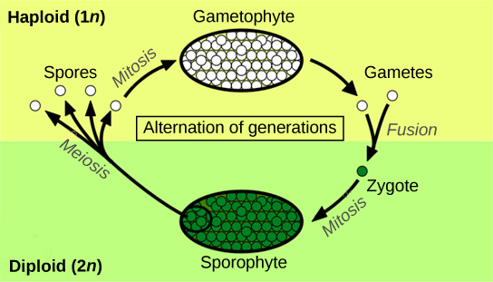
Haplontic refers to a life cycle in which there is a dominant haploid stage. Diplontic refers to a life cycle in which the diploid stage is the dominant stage, and the haploid chromosome number is only seen for a brief time in the life cycle during sexual reproduction. Humans are diplontic, for example. Most plants exhibit alternation of generations, which is described as haplodiplontic: the haploid multicellular form known as a gametophyte is followed in the development sequence by a multicellular diploid organism, the sporophyte. The gametophyte gives rise to the gametes, or reproductive cells, by mitosis. It can be the most obvious phase of the life cycle of the plant, as in the mosses, or it can occur in a microscopic structure, such as a pollen grain in the higher plants (the collective term for the vascular plants). The sporophyte stage is barely noticeable in lower plants (the collective term for the plant groups of mosses, liverworts, and hornworts). Towering trees are the diplontic phase in the lifecycles of plants such as sequoias and pines.
The sporophyte of seedless plants is diploid and results from syngamy or the fusion of two gametes (Figure 14.2). The sporophyte bears the sporangia (singular, sporangium), organs that first appeared in the land plants. The term "sporangia" literally means "spore in a vessel," as it is a reproductive sac that contains spores. Inside the multicellular sporangia, the diploid sporocytes, or mother cells, produce haploid spores by meiosis, which reduces the 2n chromosome number to 1n. The spores are later released by the sporangia and disperse in the environment. Two different types of spores are produced in land plants, resulting in the separation of sexes at different points in the life cycle. Seedless nonvascular plants (more appropriately referred to as "seedless nonvascular plants with a dominant gametophyte phase") produce only one kind of spore, and are called homosporous. After germinating from a spore, the gametophyte produces both male and female gametangia, usually on the same individual. In contrast, heterosporous plants produce two morphologically different types of spores. The male spores are called microspores because of their smaller size; the comparatively larger megaspores will develop into the female gametophyte. Heterospory is observed in a few seedless vascular plants and in all seed plants.
When the haploid spore germinates, it generates a multicellular gametophyte by mitosis. The gametophyte supports the zygote formed from the fusion of gametes and the resulting young sporophyte or vegetative form, and the cycle begins anew (Figure 14.3 and Figure 14.4).
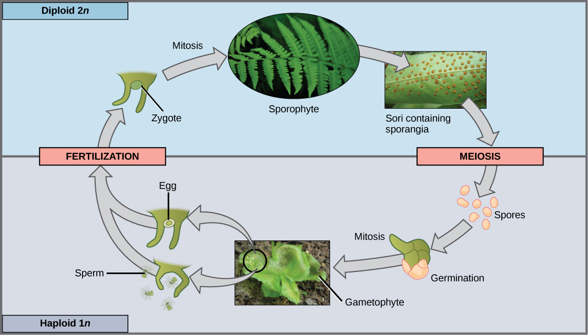
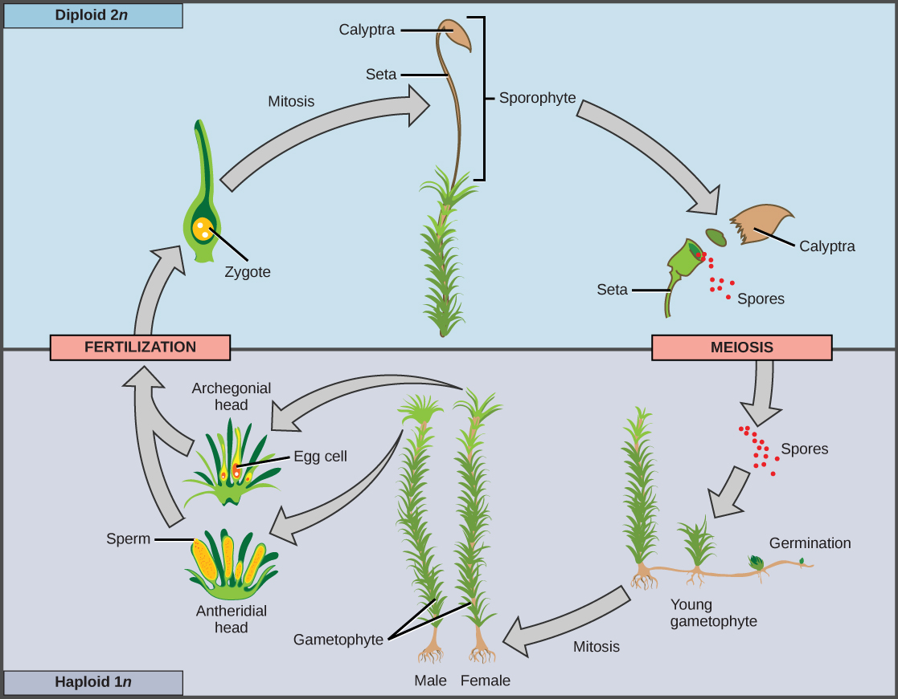
The spores of seedless plants and the pollen of seed plants are surrounded by thick cell walls containing a tough polymer known as sporopollenin. This substance is characterized by long chains of organic molecules related to fatty acids and carotenoids, and gives most pollen its yellow color. Sporopollenin is unusually resistant to chemical and biological degradation. Its toughness explains the existence of well-preserved fossils of pollen. Sporopollenin was once thought to be an innovation of land plants; however, the green algae Coleochaetes is now known to form spores that contain sporopollenin.
Protection of the embryo is a major requirement for land plants. The vulnerable embryo must be sheltered from desiccation and other environmental hazards. In both seedless and seed plants, the female gametophyte provides nutrition, and in seed plants, the embryo is also protected as it develops into the new generation of sporophyte.
Gametangia (singular, gametangium) are structures on the gametophytes of seedless plants in which gametes are produced by mitosis. The male gametangium, the antheridium, releases sperm. Many seedless plants produce sperm equipped with flagella that enable them to swim in a moist environment to the archegonia, the female gametangium. The embryo develops inside the archegonium as the sporophyte.
The shoots and roots of plants increase in length through rapid cell division within a tissue called the apical meristem (Figure 14.5). The apical meristem is a cap of cells at the shoot tip or root tip made of undifferentiated cells that continue to proliferate throughout the life of the plant. Meristematic cells give rise to all the specialized tissues of the plant. Elongation of the shoots and roots allows a plant to access additional space and resources: light in the case of the shoot, and water and minerals in the case of roots. A separate meristem, called the lateral meristem, produces cells that increase the diameter of stems and tree trunks. Apical meristems are an adaptation to allow vascular plants to grow in directions essential to their survival: upward to greater availability of sunlight, and downward into the soil to obtain water and essential minerals.
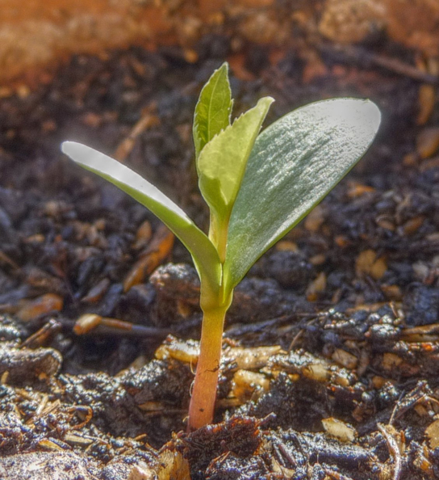
As plants adapted to dry land and became independent of the constant presence of water in damp habitats, new organs and structures made their appearance. Early land plants did not grow above a few inches off the ground, and on these low mats, they competed for light. By evolving a shoot and growing taller, individual plants captured more light. Because air offers substantially less support than water, land plants incorporated more rigid molecules in their stems (and later, tree trunks). The evolution of vascular tissue for the distribution of water and solutes was a necessary prerequisite for plants to evolve larger bodies. The vascular system contains xylem and phloem tissues. Xylem conducts water and minerals taken from the soil up to the shoot; phloem transports food derived from photosynthesis throughout the entire plant. The root system that evolved to take up water and minerals also anchored the increasingly taller shoot in the soil.
In land plants, a waxy, waterproof cover called a cuticle coats the aerial parts of the plant: leaves and stems. The cuticle also prevents intake of carbon dioxide needed for the synthesis of carbohydrates through photosynthesis. Stomata, or pores, that open and close to regulate traffic of gases and water vapor therefore appeared in plants as they moved into drier habitats.
Plants cannot avoid predatory animals. Instead, they synthesize a large range of poisonous secondary metabolites: complex organic molecules such as alkaloids, whose noxious smells and unpleasant taste deter animals. These toxic compounds can cause severe diseases and even death.
Additionally, as plants coevolved with animals, sweet and nutritious metabolites were developed to lure animals into providing valuable assistance in dispersing pollen grains, fruit, or seeds. Plants have been coevolving with animal associates for hundreds of millions of years (Figure 14.6).
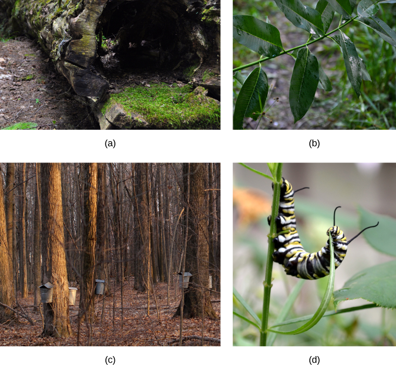
How organisms acquired traits that allow them to colonize new environments, and how the contemporary ecosystem is shaped, are fundamental questions of evolution. Paleobotany addresses these questions by specializing in the study of extinct plants. Paleobotanists analyze specimens retrieved from field studies, reconstituting the morphology of organisms that have long disappeared. They trace the evolution of plants by following the modifications in plant morphology, and shed light on the connection between existing plants by identifying common ancestors that display the same traits. This field seeks to find transitional species that bridge gaps in the path to the development of modern organisms. Fossils are formed when organisms are trapped in sediments or environments where their shapes are preserved (Figure 14.7). Paleobotanists determine the geological age of specimens and the nature of their environment using the geological sediments and fossil organisms surrounding them. The activity requires great care to preserve the integrity of the delicate fossils and the layers in which they are found.
One of the most exciting recent developments in paleobotany is the use of analytical chemistry and molecular biology to study fossils. Preservation of molecular structures requires an environment free of oxygen, since oxidation and degradation of material through the activity of microorganisms depend on the presence of oxygen. One example of the use of analytical chemistry and molecular biology is in the identification of oleanane, a compound that deters pests and which, up to this point, appears to be unique to flowering plants. Oleanane was recovered from sediments dating from the Permian, much earlier than the current dates given for the appearance of the first flowering plants. Fossilized nucleic acids—DNA and RNA—yield the most information. Their sequences are analyzed and compared to those of living and related organisms. Through this analysis, evolutionary relationships can be built for plant lineages.
Some paleobotanists are skeptical of the conclusions drawn from the analysis of molecular fossils. For one, the chemical materials of interest degrade rapidly during initial isolation when exposed to air, as well as in further manipulations. There is always a high risk of contaminating the specimens with extraneous material, mostly from microorganisms. Nevertheless, as technology is refined, the analysis of DNA from fossilized plants will provide invaluable information on the evolution of plants and their adaptation to an ever-changing environment.
Land plants are classified into two major groups according to the absence or presence of vascular tissue, as detailed in Figure 14.8. Plants that lack vascular tissue formed of specialized cells for the transport of water and nutrients are referred to as nonvascular plants. The bryophytes, liverworts, mosses, and hornworts are seedless and nonvascular, and likely appeared early in land plant evolution. Vascular plants developed a network of cells that conduct water and solutes through the plant body. The first vascular plants appeared in the late Ordovician (461–444 million years ago) and were probably similar to lycophytes, which include club mosses (not to be confused with the mosses) and the pterophytes (ferns, horsetails, and whisk ferns). Lycophytes and pterophytes are referred to as seedless vascular plants. They do not produce seeds, which are embryos with their stored food reserves protected by a hard casing. The seed plants form the largest group of all existing plants and, hence, dominate the landscape. Seed plants include gymnosperms, most notably conifers, which produce "naked seeds," and the most successful plants, the flowering plants, or angiosperms, which protect their seeds inside chambers at the center of a flower. The walls of these chambers later develop into fruits.
Describe the four major adaptations found in terrestrial plants (alternation of generations, sporangia, gametangia, and apical meristems). Then explain the difference between homosporous and heterosporous plants, and describe how vascular tissue (xylem and phloem) allowed plants to grow taller.
- Describe the distinguishing traits of the three types of bryophytes
- Identify the new traits that first appear in seedless vascular plants
- Describe the major classes of seedless vascular plants
An incredible variety of seedless plants populates the terrestrial landscape. Mosses grow on tree trunks, and horsetails (Figure 14.9) display their jointed stems and spindly leaves on the forest floor. Yet, seedless plants represent only a small fraction of the plants in our environment. Three hundred million years ago, seedless plants dominated the landscape and grew in the enormous swampy forests of the Carboniferous period. Their decomposing bodies created large deposits of coal that we mine today.
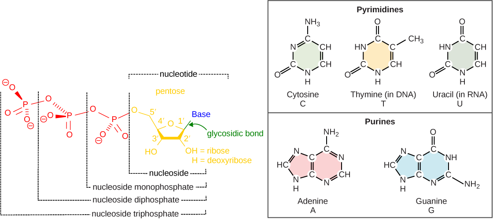
Bryophytes, an informal grouping of the nonvascular plants, are the closest extant relative of early terrestrial plants. The first bryophytes most probably appeared in the Ordovician period, about 490 million years ago. Because of the lack of lignin—the tough polymer in cell walls in the stems of vascular plants—and other resistant structures, the likelihood of bryophytes forming fossils is rather small, though some spores made up of sporopollenin have been discovered that have been attributed to early bryophytes. By the Silurian period (440 million years ago), however, vascular plants had spread throughout the continents. This fact is used as evidence that nonvascular plants must have preceded the Silurian period.
There are about 18,000 species of bryophytes, which thrive mostly in damp habitats, although some grow in deserts. They constitute the major flora of inhospitable environments like the tundra, where their small size and tolerance to desiccation offer distinct advantages. They do not have the specialized cells that conduct fluids found in the vascular plants, and generally lack lignin. In bryophytes, water and nutrients circulate inside specialized conducting cells. Although the name nontracheophyte is more accurate, bryophytes are commonly referred to as nonvascular plants.
In a bryophyte, all the conspicuous vegetative organs belong to the haploid organism, or gametophyte. The diploid sporophyte is barely noticeable. The gametes formed by bryophytes swim using flagella. The sporangium, the multicellular sexual reproductive structure, is present in bryophytes. The embryo also remains attached to the parent plant, which nourishes it. This is a characteristic of land plants.
The bryophytes are divided into three divisions (in plants, the taxonomic level "division" is used instead of phylum): the liverworts, or Marchantiophyta; the hornworts, or Anthocerotophyta; and the mosses, or true Bryophyta.
Liverworts (Marchantiophyta) may be viewed as the plants most closely related to the ancestor that moved to land. Liverworts have colonized many habitats on Earth and diversified to more than 6,000 existing species (Figure 14.10a). Some gametophytes form lobate green structures, as seen in Figure 14.10b. The shape is similar to the lobes of the liver and, hence, provides the origin of the common name given to the division.
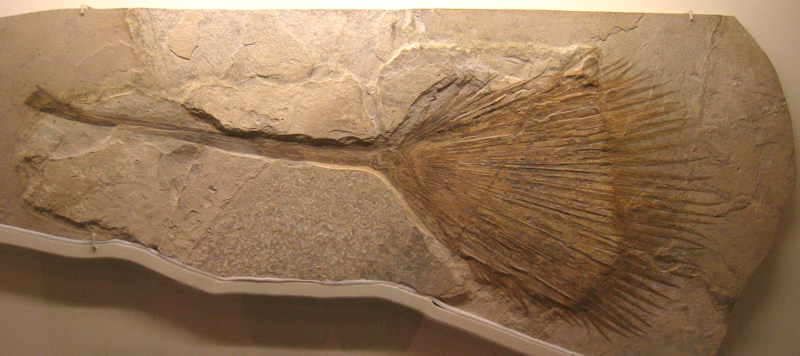
The hornworts (Anthocerotophyta) have colonized a variety of habitats on land, although they are never far from a source of moisture. There are about 100 described species of hornworts. The dominant phase of the life cycle of hornworts is the short, blue-green gametophyte. The sporophyte is the defining characteristic of the group. It is a long and narrow pipe-like structure that emerges from the parent gametophyte and maintains growth throughout the life of the plant (Figure 14.11).
More than 12,000 species of mosses have been catalogued. Their habitats vary from the tundra, where they are the main vegetation, to the understory of tropical forests. In the tundra, their shallow rhizoids allow them to fasten to a substrate without digging into the frozen soil. They slow down erosion, store moisture and soil nutrients, and provide shelter for small animals and food for larger herbivores, such as the musk ox. Mosses are very sensitive to air pollution and are used to monitor the quality of air. The sensitivity of mosses to copper salts makes these salts a common ingredient of compounds marketed to eliminate mosses in lawns (Figure 14.12).
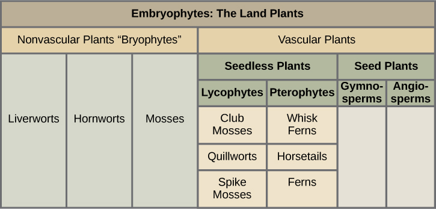
The vascular plants are the dominant and most conspicuous group of land plants. There are about 275,000 species of vascular plants, which represent more than 90 percent of Earth's vegetation. Several evolutionary innovations explain their success and their spread to so many habitats.
The first fossils that show the presence of vascular tissue are dated to the Silurian period, about 430 million years ago. The simplest arrangement of conductive cells shows a pattern of xylem at the center surrounded by phloem. Xylem is the tissue responsible for long-distance transport of water and minerals, the transfer of water-soluble growth factors from the organs of synthesis to the target organs, and storage of water and nutrients.
A second type of vascular tissue is phloem, which transports sugars, proteins, and other solutes through the plant. Phloem cells are divided into sieve elements, or conducting cells, and supportive tissue. Together, xylem and phloem tissues form the vascular system of plants.
Roots are not well preserved in the fossil record; nevertheless, it seems that they did appear later in evolution than vascular tissue. The development of an extensive network of roots represented a significant new feature of vascular plants. Thin rhizoids attached the bryophytes to the substrate. Their rather flimsy filaments did not provide a strong anchor for the plant; neither did they absorb water and nutrients. In contrast, roots, with their prominent vascular tissue system, transfer water and minerals from the soil to the rest of the plant. The extensive network of roots that penetrates deep in the ground to reach sources of water also stabilizes trees by acting as ballast and an anchor. The majority of roots establish a symbiotic relationship with fungi, forming mycorrhizae. In the mycorrhizae, fungal hyphae grow around the root and within the root around the cells, and in some instances within the cells. This benefits the plant by greatly increasing the surface area for absorption.
A third adaptation marks seedless vascular plants. Accompanying the prominence of the sporophyte and the development of vascular tissue, the appearance of true leaves improved photosynthetic efficiency. Leaves capture more sunlight with their increased surface area.
In addition to photosynthesis, leaves play another role in the life of the plants. Pinecones, mature fronds of ferns, and flowers are all sporophylls—leaves that were modified structurally to bear sporangia. Strobili are structures that contain the sporangia. They are prominent in conifers and are known commonly as cones: for example, the pine cones of pine trees.
By the Late Devonian period (385 million years ago), plants had evolved vascular tissue, well-defined leaves, and root systems. With these advantages, plants increased in height and size. During the Carboniferous period (359–299 million years ago), swamp forests of club mosses and horsetails, with some specimens reaching more than 30 meters tall, covered most of the land. These forests gave rise to the extensive coal deposits that gave the Carboniferous its name. In seedless vascular plants, the sporophyte became the dominant phase of the lifecycle. Water is still required for fertilization of seedless vascular plants, and most favor a moist environment. Modern-day seedless vascular plants include club mosses, horsetails, ferns, and whisk ferns.
The club mosses, or Lycophyta, are the earliest group of seedless vascular plants. They dominated the landscape of the Carboniferous period, growing into tall trees and forming large swamp forests. Today's club mosses are diminutive, evergreen plants consisting of a stem (which may be branched) and small leaves called microphylls (Figure 14.13). The division Lycophyta consists of close to 1,000 species, including quillworts (Isoetales), club mosses (Lycopodiales), and spike mosses (Selaginellales): none of which is a true moss.
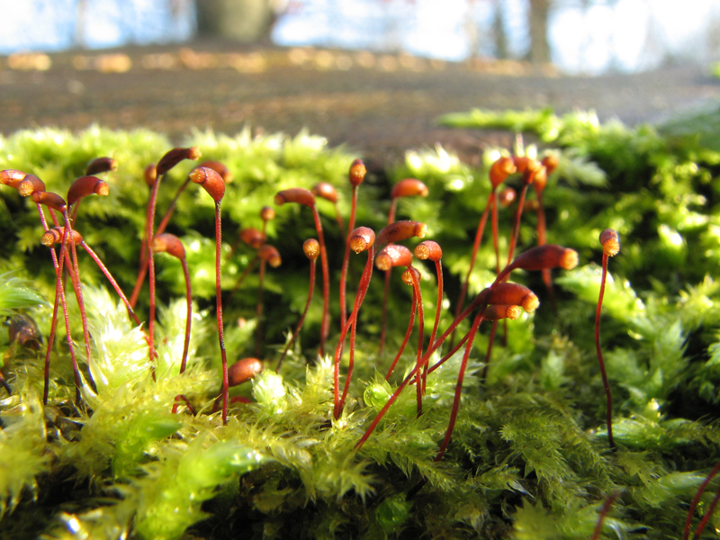
Ferns and whisk ferns belong to the division Pterophyta. A third group of plants in the Pterophyta, the horsetails, is sometimes classified separately from ferns. Horsetails have a single genus, Equisetum. They are the survivors of a large group of plants, known as Arthrophyta, which produced large trees and entire swamp forests in the Carboniferous. The plants are usually found in damp environments and marshes (Figure 14.14).
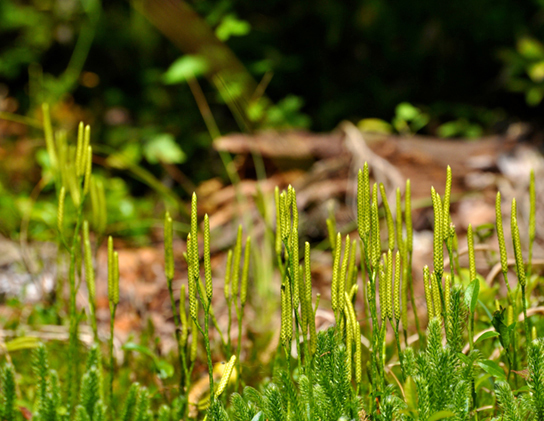
The stem of a horsetail is characterized by the presence of joints, or nodes: hence the name Arthrophyta, which means "jointed plant". Leaves and branches come out as whorls from the evenly spaced rings. The needle-shaped leaves do not contribute greatly to photosynthesis, the majority of which takes place in the green stem (Figure 14.15).
Ferns are considered the most advanced seedless vascular plants and display characteristics commonly observed in seed plants. Ferns form large leaves and branching roots. In contrast, whisk ferns, the psilophytes, lack both roots and leaves, which were probably lost by evolutionary reduction. Evolutionary reduction is a process by which natural selection reduces the size of a structure that is no longer favorable in a particular environment. Photosynthesis takes place in the green stem of a whisk fern. Small yellow knobs form at the tip of the branch stem and contain the sporangia. Whisk ferns have been classified outside the true ferns; however, recent comparative analysis of DNA suggests that this group may have lost both vascular tissue and roots through evolution, and is actually closely related to ferns.
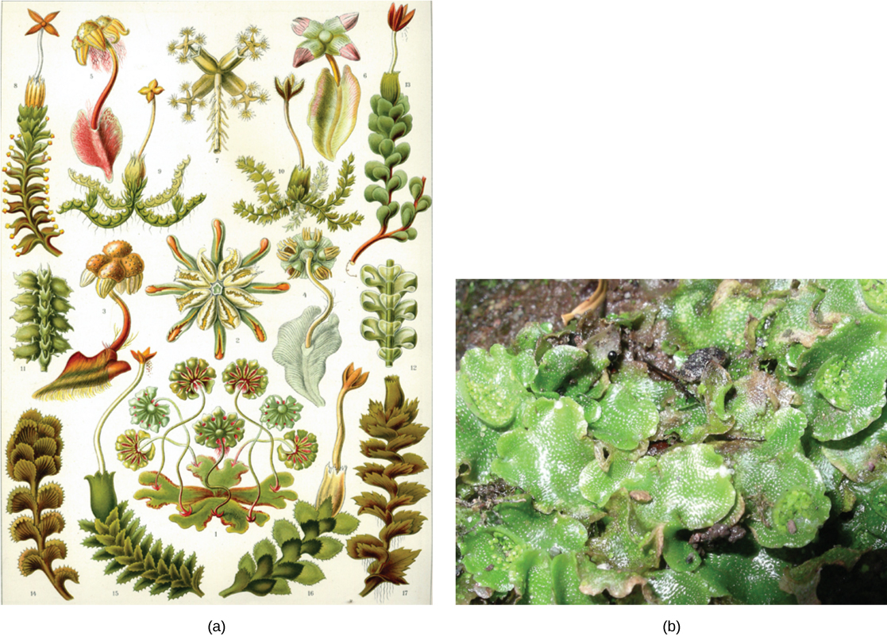
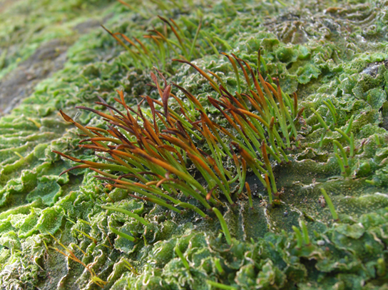
With their large fronds, ferns are the most readily recognizable seedless vascular plants (Figure 14.16). About 12,000 species of ferns live in environments ranging from tropics to temperate forests. Although some species survive in dry environments, most ferns are restricted to moist and shaded places. They made their appearance in the fossil record during the Devonian period (416–359 million years ago) and expanded during the Carboniferous period, 359–299 million years ago (Figure 14.17).
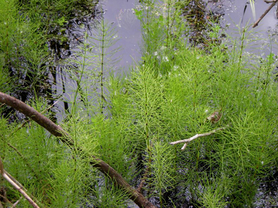
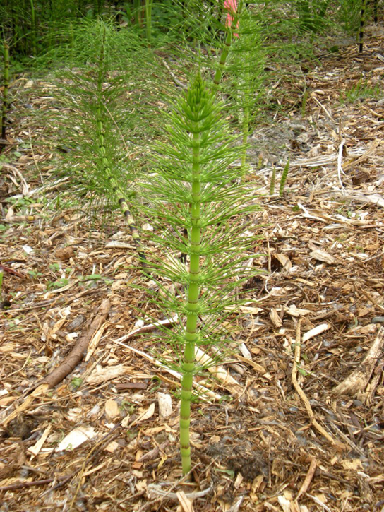
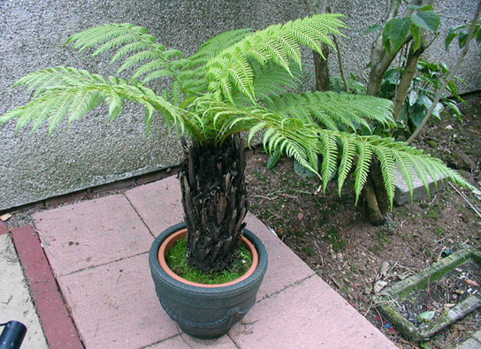
Compare and contrast the three types of bryophytes (liverworts, hornworts, and mosses). Then describe at least two key innovations of seedless vascular plants and explain why the Carboniferous period was significant for seedless plants.
- Discuss the type of seeds produced by gymnosperms, as well as other characteristics of gymnosperms
- List the four groups of modern-day gymnosperms and provide examples of each
The first plants to colonize land were most likely closely related to modern-day mosses (bryophytes) and are thought to have appeared about 500 million years ago. They were followed by liverworts (also bryophytes) and primitive vascular plants, the pterophytes, from which modern ferns are derived. The life cycle of bryophytes and pterophytes is characterized by the alternation of generations. The completion of the life cycle requires water, as the male gametes must swim to the female gametes. The male gametophyte releases sperm, which must swim—propelled by their flagella—to reach and fertilize the female gamete or egg. After fertilization, the zygote matures and grows into a sporophyte, which in turn will form sporangia, or "spore vessels," in which mother cells undergo meiosis and produce haploid spores. The release of spores in a suitable environment will lead to germination and a new generation of gametophytes.
In seed plants, the evolutionary trend led to a dominant sporophyte generation, in which the larger and more ecologically significant generation for a species is the diploid plant. At the same time, the trend led to a reduction in the size of the gametophyte, from a conspicuous structure to a microscopic cluster of cells enclosed in the tissues of the sporophyte. Lower vascular plants, such as club mosses and ferns, are mostly homosporous (produce only one type of spore). In contrast, all seed plants, or spermatophytes, are heterosporous, forming two types of spores: megaspores (female) and microspores (male). Megaspores develop into female gametophytes that produce eggs, and microspores mature into male gametophytes that generate sperm. Because gametophyte maturation depends on water and nutrient supply from the dominant sporophyte tissue, they are not free-living, as are the gametophytes of seedless vascular plants. Heterosporous seedless plants are seen as the evolutionary forerunners of seed plants.
Seeds and pollen—two adaptations to drought—distinguish seed plants from other (seedless) vascular plants. Both adaptations were critical to the colonization of land. Fossils place the earliest distinct seed plants at about 350 million years ago. The earliest reliable record of gymnosperms dates their appearance to the Carboniferous period (359–299 million years ago). Gymnosperms were preceded by the progymnosperms ("first naked seed plants"). This was a transitional group of plants that superficially resembled conifers ("cone bearers") because they produced wood from the secondary growth of the vascular tissues; however, they still reproduced like ferns, releasing spores to the environment. In the Mesozoic era (251–65.5 million years ago), gymnosperms dominated the landscape. Angiosperms took over by the middle of the Cretaceous period (145.5–65.5 million years ago) in the late Mesozoic era, and have since become the most abundant plant group in most terrestrial biomes.
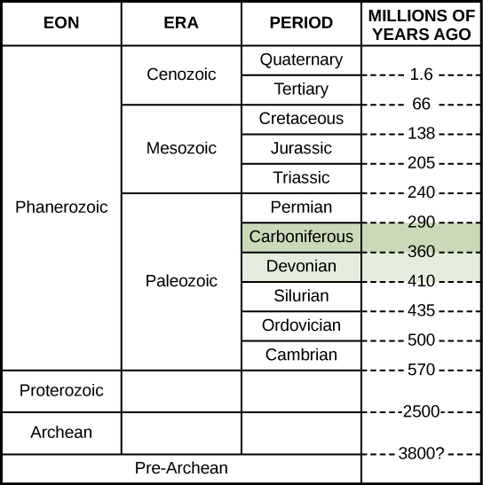
The two innovative structures of pollen and seed allowed seed plants to break their dependence on water for reproduction and development of the embryo, and to conquer dry land. The pollen grains carry the male gametes of the plant. The small haploid (1n) cells are encased in a protective coat that prevents desiccation (drying out) and mechanical damage. Pollen can travel far from the sporophyte that bore it, spreading the plant's genes and avoiding competition with other plants. The seed offers the embryo protection, nourishment and a mechanism to maintain dormancy for tens or even thousands of years, allowing it to survive in a harsh environment and ensuring germination when growth conditions are optimal. Seeds allow plants to disperse the next generation through both space and time. With such evolutionary advantages, seed plants have become the most successful and familiar group of plants.
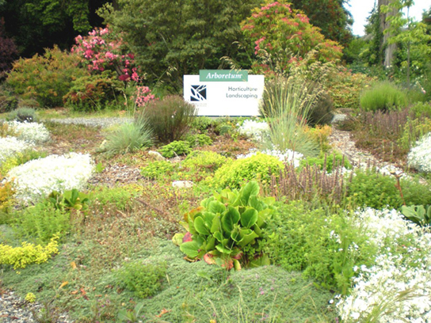
Gymnosperms ("naked seed") are a diverse group of seed plants and are paraphyletic. Paraphyletic groups do not include descendants of a single common ancestor. Gymnosperm characteristics include naked seeds, separate female and male gametes, pollination by wind, and tracheids, which transport water and solutes in the vascular system.
Pine trees are conifers and carry both male and female sporophylls on the same plant. Like all gymnosperms, pines are heterosporous and produce male microspores and female megaspores. In the male cones, or staminate cones, the microsporocytes give rise to microspores by meiosis. The microspores then develop into pollen grains. Each pollen grain contains two cells: one generative cell that will divide into two sperm, and a second cell that will become the pollen tube cell. In the spring, pine trees release large amounts of yellow pollen, which is carried by the wind. Some gametophytes will land on a female cone. The pollen tube grows from the pollen grain slowly, and the generative cell in the pollen grain divides into two sperm cells by mitosis. One of the sperm cells will finally unite its haploid nucleus with the haploid nucleus of an egg cell in the process of fertilization.
Female cones, or ovulate cones, contain two ovules per scale. One megasporocyte undergoes meiosis in each ovule. Only a single surviving haploid cell will develop into a female multicellular gametophyte that encloses an egg. On fertilization, the zygote will give rise to the embryo, which is enclosed in a seed coat of tissue from the parent plant. Fertilization and seed development is a long process in pine trees—it may take up to two years after pollination. The seed that is formed contains three generations of tissues: the seed coat that originates from the parent plant tissue, the female gametophyte that will provide nutrients, and the embryo itself. Figure 14.19 illustrates the life cycle of a conifer.
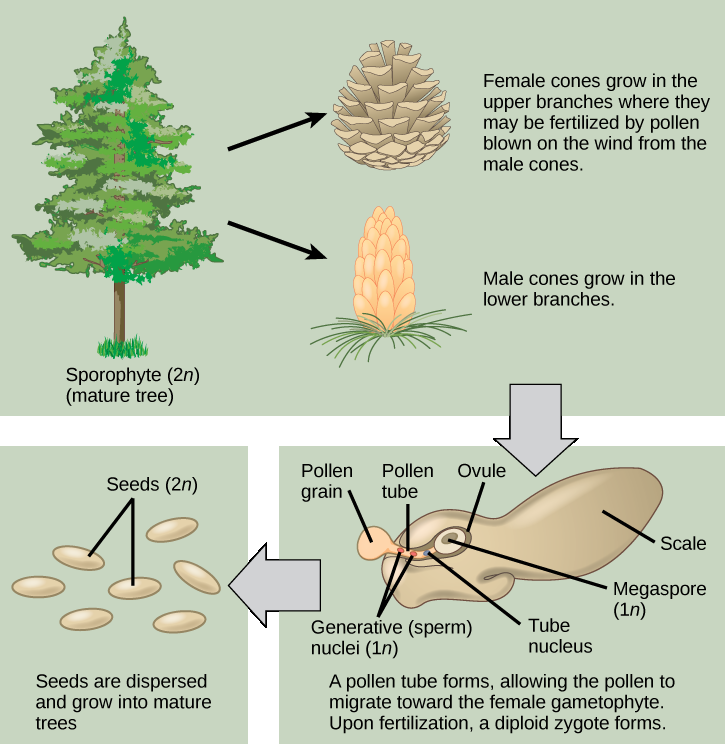
Modern gymnosperms are classified into four major divisions and comprise about 1,000 described species. Coniferophyta, Cycadophyta, and Ginkgophyta are similar in their production of secondary cambium (cells that generate the vascular system of the trunk or stem) and their pattern of seed development, but are not closely related phylogenetically to each other. Gnetophyta are considered the closest group to angiosperms because they produce true xylem tissue that contains both tracheids and vessel elements.
Conifers are the dominant phylum of gymnosperms, with the most variety of species. Most are tall trees that usually bear scale-like or needle-like leaves. The thin shape of the needles and their waxy cuticle limits water loss through transpiration. Snow slides easily off needle-shaped leaves, keeping the load light and decreasing breaking of branches. These adaptations to cold and dry weather explain the predominance of conifers at high altitudes and in cold climates. Conifers include familiar evergreen trees, such as pines, spruces, firs, cedars, sequoias, and yews (Figure 14.20). A few species are deciduous and lose their leaves all at once in fall. The European larch and the tamarack are examples of deciduous conifers. Many coniferous trees are harvested for paper pulp and timber. The wood of conifers is more primitive than the wood of angiosperms; it contains tracheids, but no vessel elements, and is referred to as "soft wood."
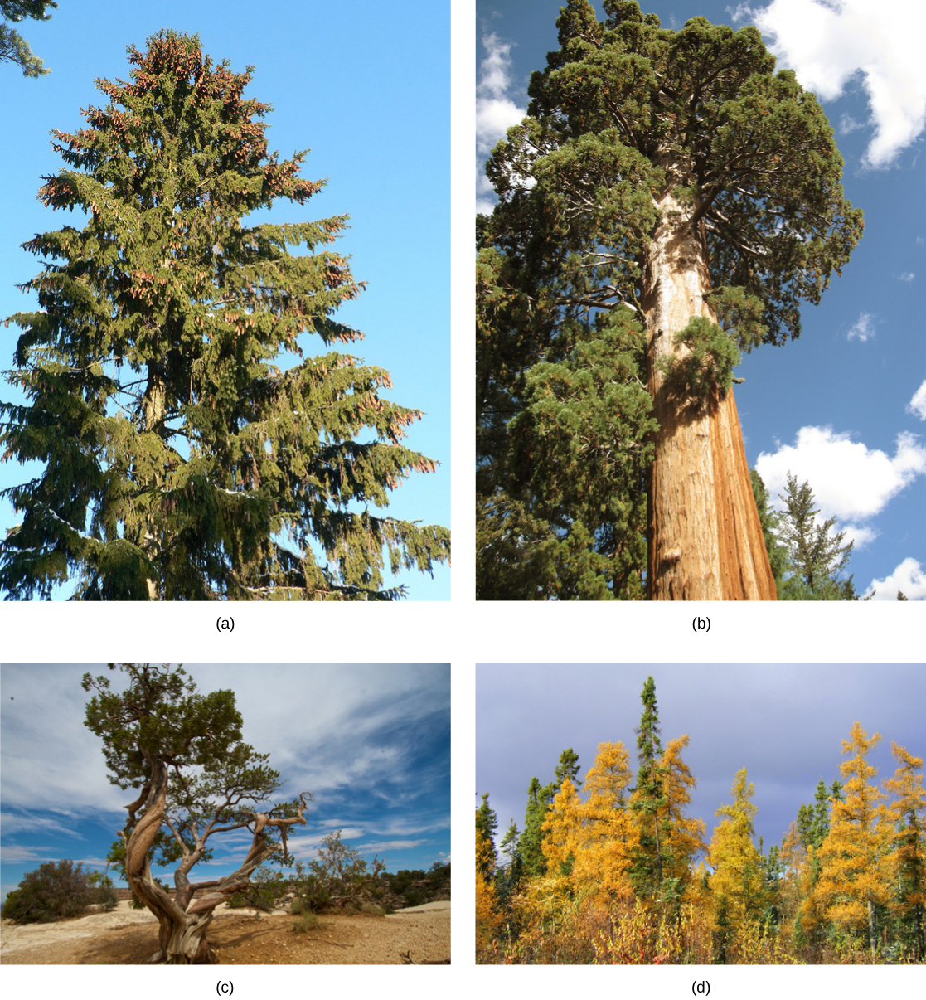
Cycads thrive in mild climates and are often mistaken for palms because of the shape of their large, compound leaves. They bear large cones, and unusually for gymnosperms, may be pollinated by beetles, rather than wind. They dominated the landscape during the age of dinosaurs in the Mesozoic era (251–65.5 million years ago). Only a hundred or so cycad species persisted to modern times. They face possible extinction, and several species are protected through international conventions. Because of their attractive shape, they are often used as ornamental plants in gardens (Figure 14.21).
The single surviving species of ginkgophyte is the Ginkgo biloba (Figure 14.22). Its fan-shaped leaves, unique among seed plants because they feature a dichotomous venation pattern, turn yellow in autumn and fall from the plant. For centuries, Buddhist monks cultivated Ginkgo biloba, ensuring its preservation. It is planted in public spaces because it is unusually resistant to pollution. Male and female organs are found on separate plants. Usually, only male trees are planted by gardeners because the seeds produced by the female plant have an off-putting smell of rancid butter.
Gnetophytes are the closest relatives to modern angiosperms, and include three dissimilar genera of plants. Like angiosperms, they have broad leaves. Gnetum species are mostly vines in tropical and subtropical zones. The single species of Welwitschia is an unusual, low-growing plant found in the deserts of Namibia and Angola. It may live for up to 2000 years. The genus Ephedra is represented in North America in dry areas of the southwestern United States and Mexico (Figure 14.23). Ephedra's small, scale-like leaves are the source of the compound ephedrine, which is used in medicine as a potent decongestant. Because ephedrine is similar to amphetamines, both in chemical structure and neurological effects, its use is restricted to prescription drugs. Like angiosperms, but unlike other gymnosperms, all gnetophytes possess vessel elements in their xylem.
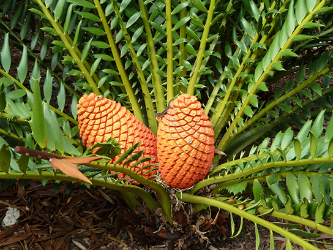
Describe the two key adaptations (seeds and pollen) that allowed seed plants to colonize dry land. Explain the life cycle of a conifer, including the roles of male and female cones, and list the four major divisions of modern gymnosperms with an example or characteristic of each.
- Describe the main parts of a flower and their purpose
- Detail the life cycle of an angiosperm
- Discuss the two main groups into which flower plants are divided, as well as explain how basal angiosperms differ from others
From their humble and still obscure beginning during the early Jurassic period (202–145.5 MYA), the angiosperms, or flowering plants, have successfully evolved to dominate most terrestrial ecosystems. Angiosperms include a staggering number of genera and species; with more than 260,000 species, the division is second only to insects in terms of diversification (Figure 14.24).
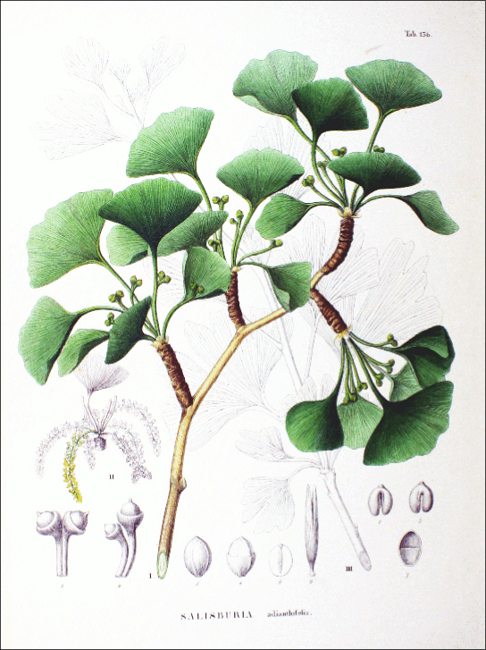
Angiosperm success is a result of two novel structures that ensure reproductive success: flowers and fruit. Flowers allowed plants to form cooperative evolutionary relationships with animals, in particular insects, to disperse their pollen to female gametophytes in a highly targeted way. Fruit protect the developing embryo and serve as an agent of dispersal. Different structures on fruit reflect the dispersal strategies that help with the spreading of seeds.
Flowers are modified leaves or sporophylls organized around a central stalk. Although they vary greatly in appearance, all flowers contain the same structures: sepals, petals, pistils, and stamens. A whorl of sepals (the calyx) is located at the base of the peduncle, or stem, and encloses the floral bud before it opens. Sepals are usually photosynthetic organs, although there are some exceptions. For example, the corolla in lilies and tulips consists of three sepals and three petals that look virtually identical—this led botanists to coin the word tepal. Petals (collectively the corolla) are located inside the whorl of sepals and usually display vivid colors to attract pollinators. Flowers pollinated by wind are usually small and dull. The sexual organs are located at the center of the flower.
As illustrated in Figure 14.25, the stigma, style, and ovary constitute the female organ, the carpel or pistil, which is also referred to as the gynoecium. A gynoecium may contain one or more carpels within a single flower. The megaspores and the female gametophytes are produced and protected by the thick tissues of the carpel. A long, thin structure called a style leads from the sticky stigma, where pollen is deposited, to the ovary enclosed in the carpel. The ovary houses one or more ovules that will each develop into a seed upon fertilization. The male reproductive organs, the androecium or stamens, surround the central carpel. Stamens are composed of a thin stalk called a filament and a sac-like structure, the anther, in which microspores are produced by meiosis and develop into pollen grains. The filament supports the anther.
The seed forms in an ovary, which enlarges as the seeds grow. As the seed develops, the walls of the ovary also thicken and form the fruit. In botany, a fruit is a fertilized and fully grown, ripened ovary. Many foods commonly called vegetables are actually fruit. Eggplants, zucchini, string beans, and bell peppers are all technically fruit because they contain seeds and are derived from the thick ovary tissue. Acorns and winged maple keys, whose scientific name is a samara, are also fruit.
Mature fruit can be described as fleshy or dry. Fleshy fruit include the familiar berries, peaches, apples, grapes, and tomatoes. Rice, wheat, and nuts are examples of dry fruit. Another distinction is that not all fruits are derived from the ovary. Some fruits are derived from separate ovaries in a single flower, such as the raspberry. Other fruits, such as the pineapple, form from clusters of flowers. Additionally, some fruits, like watermelon and orange, have rinds. Regardless of how they are formed, fruits are an agent of dispersal. The variety of shapes and characteristics reflect the mode of dispersal. The light, dry fruits of trees and dandelions are carried by the wind. Floating coconuts are transported by water. Some fruits are colored, perfumed, sweet, and nutritious to attract herbivores, which eat the fruit and disperse the tough undigested seeds in their feces. Other fruits have burs and hooks that cling to fur and hitch rides on animals.
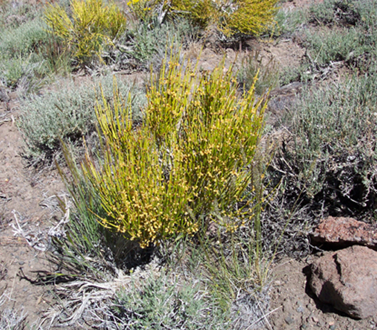
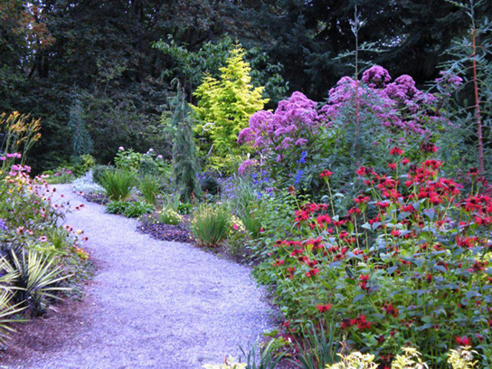
The adult, or sporophyte, phase is the main phase in an angiosperm's life cycle. Like gymnosperms, angiosperms are heterosporous. They produce microspores, which develop into pollen grains (the male gametophytes), and megaspores, which form an ovule containing the female gametophytes. Inside the anthers' microsporangia (Figure 14.26), male microsporocytes divide by meiosis, generating haploid microspores that undergo mitosis and give rise to pollen grains. Each pollen grain contains two cells: one generative cell that will divide into two sperm, and a second cell that will become the pollen tube cell.
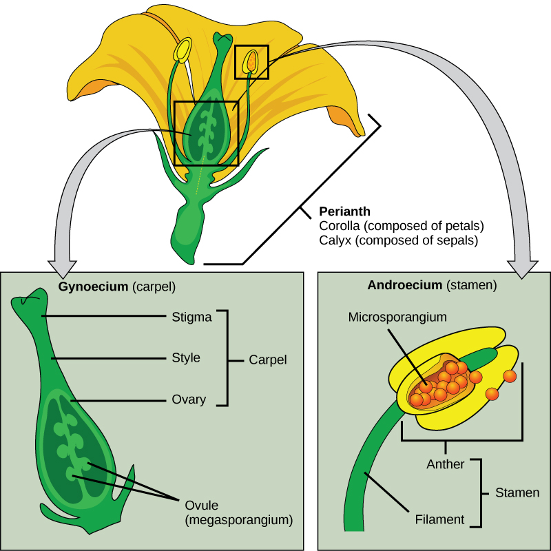
In the ovules, the female gametophyte is produced when a megasporocyte undergoes meiosis to produce four haploid megaspores. One of these is larger than the others and undergoes mitosis to form the female gametophyte or embryo sac. Three mitotic divisions produce eight nuclei in seven cells. The egg and two cells move to one end of the embryo sac (gametophyte) and three cells move to the other end. Two of the nuclei remain in a single cell and fuse to form a 2n nucleus; this cell moves to the center of the embryo sac.
When a pollen grain reaches the stigma, a pollen tube extends from the grain, grows down the style, and enters through an opening in the integuments of the ovule. The two sperm cells are deposited in the embryo sac.
What occurs next is called a double fertilization event (Figure 14.27) and is unique to angiosperms. One sperm and the egg combine, forming a diploid zygote—the future embryo. The other sperm fuses with the diploid nucleus in the center of the embryo sac, forming a triploid cell that will develop into the endosperm: a tissue that serves as a food reserve. The zygote develops into an embryo with a radicle, or small root, and one or two leaf-like organs called cotyledons. Seed food reserves are stored outside the embryo, and the cotyledons serve as conduits to transmit the broken-down food reserves to the developing embryo. The seed consists of a toughened layer of integuments forming the coat, the endosperm with food reserves and, at the center, the well-protected embryo.
Most flowers carry both stamens and carpels; however, a few species self-pollinate. These are known as "perfect" flowers because they contain both types of sex organs (Figure 14.25). Biochemical and anatomical barriers to self-pollination promote cross-pollination. Self-pollination is a severe form of inbreeding, and can increase the number of genetic defects in offspring.
A plant may have perfect flowers, and thus have multiple sexes in each flower; or, it may have imperfect flowers of both kinds on one plant (Figure 14.28). In each case, such species are called monoecious plants, meaning "one house." Some botanists refer to plants with perfect flowers simply as hermaphroditic. Some plants are dioecious, meaning "two houses," and have male and female flowers ("imperfect flowers") on different plants. In these species, cross-pollination occurs all the time.
Angiosperms are classified in a single division, the Anthophyta. Modern angiosperms appear to be a monophyletic group, which means that they originate from a single ancestor. Flowering plants are divided into two major groups, according to the structure of the cotyledons, the pollen grains, and other features: monocots, which include grasses and lilies, and eudicots or dicots, a polyphyletic group. Basal angiosperms are a group of plants that are believed to have branched off before the separation into monocots and eudicots because they exhibit traits from both groups. They are categorized separately in many classification schemes, and correspond to a grouping known as the Magnoliidae. The Magnoliidae group is comprised of magnolia trees, laurels, water lilies, and the pepper family.
The Magnoliidae are represented by the magnolias: tall trees that bear large, fragrant flowers with many parts, and are considered archaic (Figure 14.29d). Laurel trees produce fragrant leaves and small inconspicuous flowers. The Laurales are small trees and shrubs that grow mostly in warmer climates. Familiar plants in this group include the bay laurel, cinnamon, spice bush (Figure 14.29a), and the avocado tree. The Nymphaeales are comprised of the water lilies, lotus (Figure 14.29c), and similar plants. All species of the Nymphaeales thrive in freshwater biomes, and have leaves that float on the water surface or grow underwater. Water lilies are particularly prized by gardeners, and have graced ponds and pools since antiquity. The Piperales are a group of herbs, shrubs, and small trees that grow in tropical climates. They have small flowers without petals that are tightly arranged in long spikes. Many species are the source of prized fragrances or spices; for example, the berries of Piper nigrum (Figure 14.29b) are the familiar black pepper that is used to flavor many dishes.
Plants in the monocot group have a single cotyledon in the seedling, and also share other anatomical features. Veins run parallel to the length of the leaves, and flower parts are arranged in a three- or six-fold symmetry. The pollen from the first angiosperms was monosulcate (containing a single furrow or pore through the outer layer). This feature is still seen in the modern monocots. True woody tissue is rarely found in monocots, and the vascular tissue of the stem is not arranged in any particular pattern. The root system is mostly adventitious (unusually positioned) with no major taproot. The monocots include familiar plants such as the true lilies (not to be confused with the water lilies), orchids, grasses, and palms. Many important crops, such as rice and other cereals (Figure 14.30a), corn, sugar cane, and tropical fruit, including bananas and pineapple, belong to the monocots.
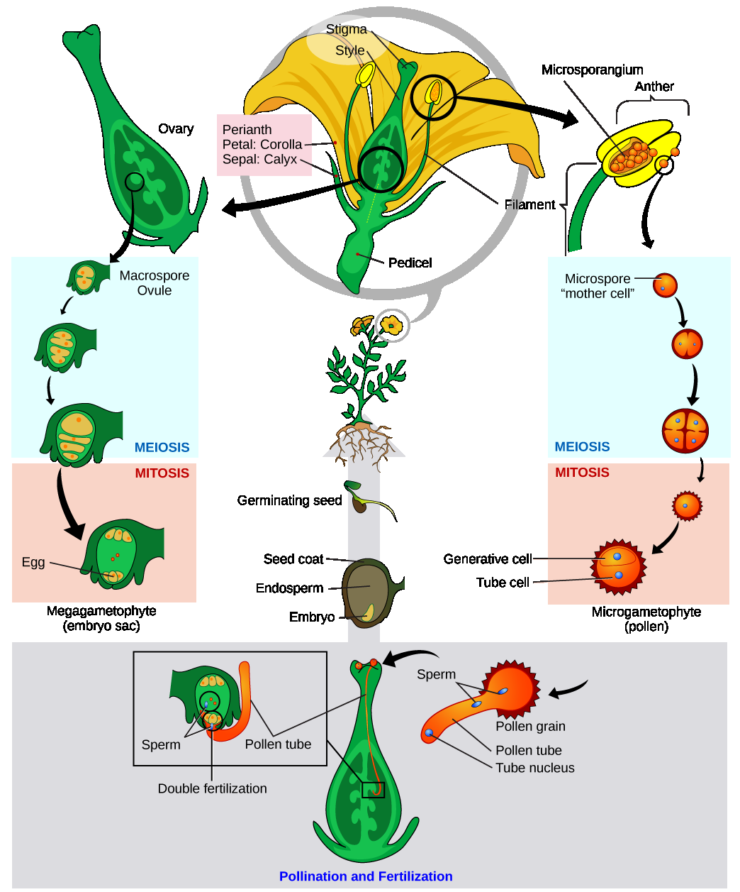
Eudicots, or true dicots, are characterized by the presence of two cotyledons. Veins form a network in leaves. Flower parts come in four, five, or many whorls. Vascular tissue forms a ring in the stem. (In monocots, vascular tissue is scattered in the stem.) Eudicots can be herbaceous (like dandelions or violets), or produce woody tissues. Most eudicots produce pollen that is trisulcate or triporate, with three furrows or pores. The root system is usually anchored by one main root developed from the embryonic radicle. Eudicots comprise two-thirds of all flowering plants. Many species seem to exhibit characteristics that belong to either group; therefore, the classification of a plant as a monocot or a eudicot is not always clearly evident (Table 14.1).
Coevolution of flowering plants and insects is a hypothesis that has received much attention and support, especially because both angiosperms and insects diversified at about the same time in the middle Mesozoic. Many authors have attributed the diversity of plants and insects to both pollination and herbivory, or the consumption of plants by insects and other animals. Herbivory is believed to have been as much a driving force as pollination. Coevolution of herbivores and plant defenses is easily and commonly observed in nature. Unlike animals, most plants cannot outrun predators or use mimicry to hide from hungry animals (although mimicry has been used to entice pollinators). A sort of arms race exists between plants and herbivores. To "combat" herbivores, some plant seeds—such as acorn and unripened persimmon—are high in alkaloids and therefore unsavory to some animals. Other plants are protected by bark, although some animals developed specialized mouth pieces to tear and chew vegetal material. Spines and thorns deter most animals, except for mammals with thick fur, and some birds have specialized beaks to get past such defenses.
Herbivory has been exploited by seed plants for their own benefit. The dispersal of fruits by herbivorous animals is a striking example of mutualistic relationships. The plant offers to the herbivore a nutritious source of food in return for spreading the plant's genetic material to a wider area.
More than 80 percent of angiosperms depend on animals for pollination (technically the transfer of pollen from the anther to the stigma). Consequently, plants have developed many adaptations to attract pollinators. With over 200,000 different plants dependent on animal pollination, the plant needs to advertise to its pollinators with some specificity. The specificity of specialized plant structures that target animals can be very surprising. It is possible, for example, to determine the general type of pollinators favored by a plant by observing the flower's physical characteristics. Many bird or insect-pollinated flowers secrete nectar, which is a sugary liquid. They also produce both fertile pollen, for reproduction, and sterile pollen rich in nutrients for birds and insects. Many butterflies and bees can detect ultraviolet light, and flowers that attract these pollinators usually display a pattern of ultraviolet reflectance that helps them quickly locate the flower's center. In this manner, pollinating insects collect nectar while at the same time are dusted with pollen. Large, red flowers with little smell and a long funnel shape are preferred by hummingbirds, who have good color perception, a poor sense of smell, and need a strong perch. White flowers that open at night attract moths. Other animals—such as bats, lemurs, and lizards—can also act as pollinating agents. Any disruption to these interactions, such as the disappearance of bees, for example as a consequence of colony collapse disorders, can lead to disaster for agricultural industries that depend heavily on pollinated crops.
Seed plants are the foundation of human diets across the world. Many societies eat almost exclusively vegetarian fare and depend solely on seed plants for their nutritional needs. A few crops (rice, wheat, and potatoes) dominate the agricultural landscape. Many crops were developed during the agricultural revolution, when human societies made the transition from nomadic hunter–gatherers to horticulture and agriculture. Cereals, rich in carbohydrates, provide the staple of many human diets. Beans and nuts supply proteins. Fats are derived from crushed seeds, as is the case for peanut and rapeseed (canola) oils, or fruits.
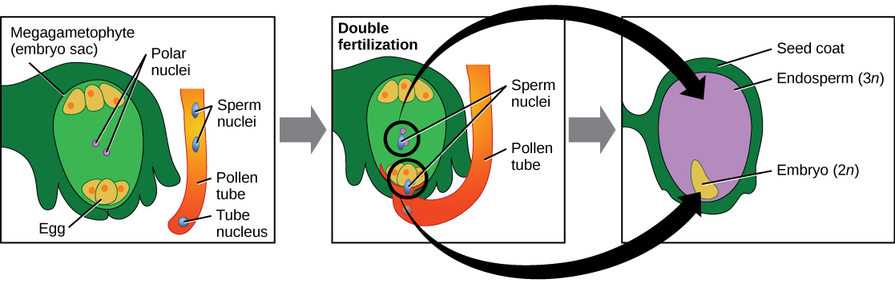
The medicinal properties of plants have been known to human societies since ancient times. There are references to the use of plants' curative properties in Egyptian, Babylonian, and Chinese writings from 5,000 years ago. Many modern synthetic therapeutic drugs are derived or synthesized from plant secondary metabolites. Very often, the raw form of the plant or plant-based substance may be unusable even if it demonstrates helpful properties. For example, chaulmoogra oil was somewhat effective for treating leprosy, but it was difficult to apply and painful for patients. In 1915, Alice Ball (at only 23 years old), created a method for extracting the active ester compounds from the oil so that it could be absorbed by the body, creating a much more effective treatment without the negative side effects. The "Ball Technique" remained the preferred method until synthetic medicines replaced it decades later. It is important to note that the same plant extract can be a therapeutic remedy at low concentrations, become an addictive drug at higher doses, and can potentially kill at high concentrations. Table 14.2 presents a few drugs, their plants of origin, and their medicinal applications.
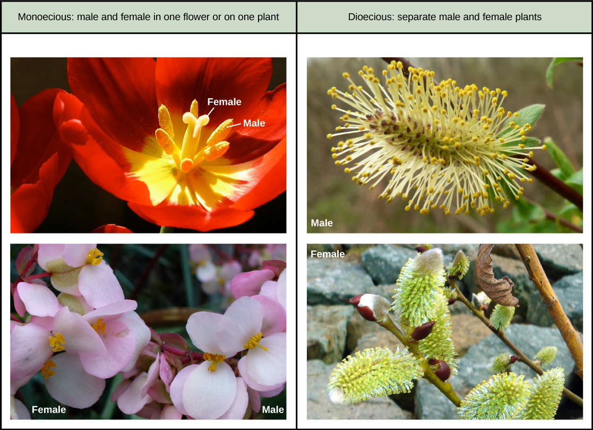
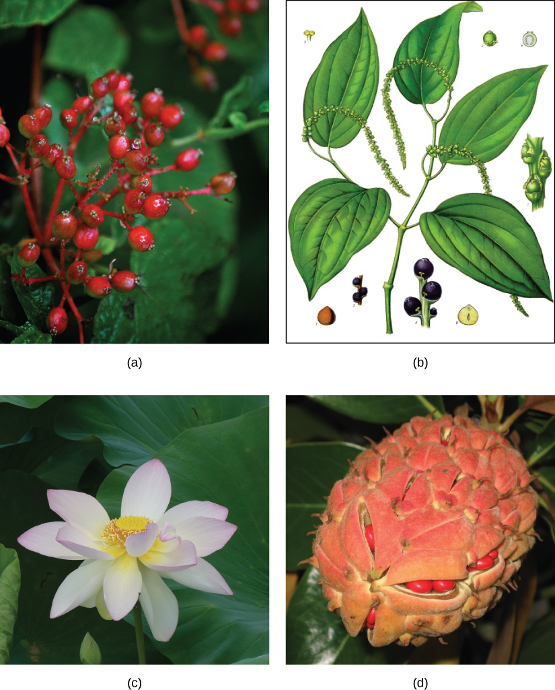
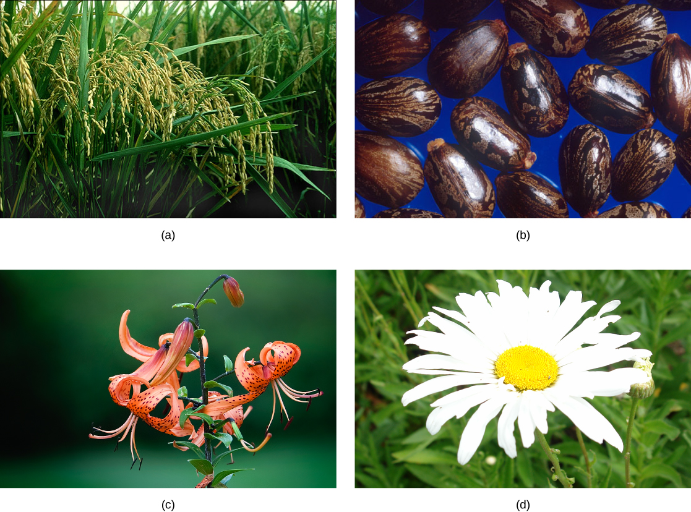
Without seed plants, life as we know it would not be possible. Plants play a key role in the maintenance of terrestrial ecosystems through the stabilization of soils, cycling of carbon, and climate moderation. Large tropical forests release oxygen and act as carbon dioxide "sinks." Seed plants provide shelter to many life forms, as well as food for herbivores, thereby indirectly feeding carnivores. Plant secondary metabolites are used for medicinal purposes and industrial production. Virtually all animal life is dependent on plants for survival.
Describe the main parts of a flower and the function of each. Explain the process of double fertilization that is unique to angiosperms. Compare and contrast monocots and eudicots, listing at least three structural differences between them.
- The Plant Kingdom (plant adaptations to land, alternation of generations, sporangia, gametangia, apical meristems) — CB 14.1
- Seedless Plants (bryophytes, liverworts, hornworts, mosses, vascular tissue, club mosses, horsetails, ferns, Carboniferous period) — CB 14.2
- Seed Plants: Gymnosperms (seeds, pollen, conifers, cycads, ginkgo, gnetophytes, conifer life cycle) — CB 14.3
- Seed Plants: Angiosperms (flowers, fruits, pollination, double fertilization, monocots, eudicots, basal angiosperms, medicinal plants) — CB 14.4